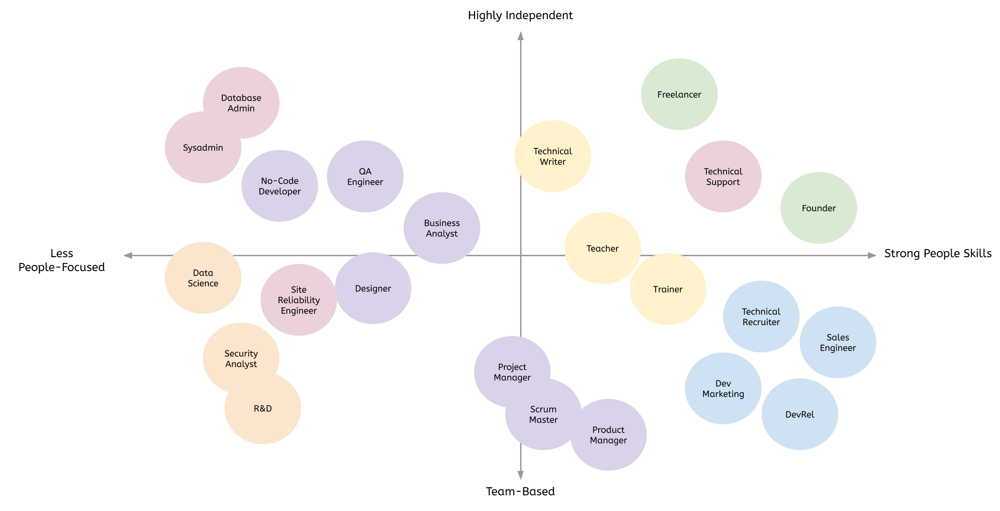

The list is surprisingly long.
This post will go through many of the career paths available to software developers, especially recent bootcamp graduates. I'll explain what each job does, how you can get your foot in the door, and the long-term prospects. Whether you're looking for an alternate career path because you haven't found a job as an engineer or because you realized software development wasn't for you, this guide will help you find a career fit for your skillset.
While software engineers benefit from having people skills, some bootcamp graduates I've talked to aren't looking forward to sitting quietly and writing code all day. If you want a career path that provides more opportunities to interact with people, these jobs may suit you.
As more companies strive to build relationships with developers who are their customers, users, or advocates, the field of developer relations is growing quickly. Developer relations professionals (some companies call them developer advocates, developer evangelists, community managers, or "DevRels") help establish and build a community around their company's software. They are often involved in creating demo applications, writing blog posts, speaking at conferences, and managing social media accounts for tech-focused companies. Many of the big-name tech companies (Facebook, Google, Amazon, etc.) hire teams of developer relations professionals.
While there's some overlap with developer relations, developer marketing is more outwardly focused. Marketing to developers is especially tricky because we don't like to be sold, so many of the more aggressive marketing tactics that work for other markets are taboo here. As a person with a technical background, you'll naturally understand the way developers think, and you'll have more clout than a traditional marketer might.
Many engineers are turned off by any job with "sales" in the title, but that's just because we've all encountered bad salespeople. The truth is that everyone is in sales. Whether you're "selling" yourself as a job candidate during the interview process or advocating for a new framework on your engineering team, sales means matching a customer's needs with the right solution. Sales engineers are unique in that they have some level of technical expertise. This can be an excellent match for developers who don't want to write code all day but understand software engineering.
Another profession that gets a bad rap among software engineers is technical recruiting. I've met some honest, genuine tech recruiters, but I've also met some awful, clueless recruiters who are purely focused on churning through candidates to hit their quota. The good news is that with a background in software development, you'll have more empathy and credibility than many other technical recruiters out there. Like sales, this field requires a more outgoing, relationship-focused personality, but it doesn't require specialized certifications or courses. Unfortunately, many of the entry-level jobs in tech recruiting are at low-quality firms, so be sure to check their reputations on Glassdoor before you apply.
If you want to remain on the product team, but you're not sure you want to be a software developer, there are many fields you can transition into. These roles work closely with engineers, so your coding knowledge will help you, but they also require other specialized knowledge.
While there are subtle differences between quality assurance and test engineers, both deal with testing software before it goes live. If you have an eye for detail and you like coming up with creative ways to automate repetitive tasks, this could be a great career path. It will likely require some coding as well as some manual testing work. Smaller companies have their software engineers test each other's code, so dedicated test and QA roles are most common in large organizations. There is a lot of variance between how companies do testing, so be sure to ask about the tools they use, how automated their tests are, and how much your role will entail manual vs. automated tests.
On the other end of the product development lifecycle are business analysts. They typically work as a bridge between the business and technical teams to ensure that requirements, limitations, and timelines are understood. They may also hop in and help with testing and quality assurance, depending on the team's structure, so they need to have a wide range of product knowledge. If you have a background in business, product development, or design and some coding skills, you may qualify for an entry-level business analyst role. If not, I'd recommend looking into some online courses to help you develop a basic understanding of the role and what it entails.
Like business analysts, project managers must understand their product's business requirements and technical constraints. The key difference is that project managers typically go deep into a single project. They often define tasks and resources for the teams working on the project and track the project's progress as it nears release. Smaller companies may combine the business analyst, project management, scrum master, and product manager roles in various ways, but larger companies may define separate responsibilities. Excellent organization skills, understanding of the business, and people skills are critical to succeed as a project manager. This role hinges on your ability to manage expectations and motivate people who might be more senior or experienced than you, so you have to build trust quickly. This role's multifaceted nature makes it a good fit for analytical, technical people who don't want to write code anymore.
In Agile teams, the Scrum Master helps make sure everyone knows and buys into Scrum theory, best practices, and rules. This ends up looking a lot like project management, but with a particular emphasis on serving the other teams involved in building the product. Again, this is not always its own job, but in larger organizations, it may be. The ability to manage expectations and limitations is critical to your success as a Scrum Master. You'll also need to know Agile best practices, so I'd recommend finding a suitable course or book on the topic. Agile has seen widespread adoption at organizations of all sizes, so this career path is likely to continue growing in the coming decade.
Product managers look holistically at the company's products to ensure they are desirable (customers want it), viable (makes business sense), and feasible (we can build it). The ability to think at a high level like this is rare, so if you have it and some technical background, you might do well as a product manager. Entry-level product managers may start with smaller parts of the product or as project managers in some organizations. This can give you a taste of product development and help you build relationships with all the necessary stakeholders before you're assigned your own product to manage.
If you come from a design or artistic background, becoming a UI or UX designer with some coding chops is a great way to stand out in your field. This combination of skills will allow you to speak more effectively with engineers and create interactive mockups in HTML/CSS rather than just static image files. If you don't have much experience in design, take a course, and start building a portfolio. Many companies will hire people without a degree if they can showcase their knowledge and skills. Dribbble is the most common portfolio platform I've seen, but you can also use your own website.
A lot of new software engineers aren't aware of the many employees behind the scenes who help keep servers, websites, and operations running smoothly. Some of these roles require you to write automation scripts or have in-depth knowledge of server administration, but if you are looking for something outside of the traditional product development cycle, but with a technical bent, these could be a great fit.
Large software companies have hundreds or thousands of servers that need to be patched, upgraded, and rotated throughout the year. While the widespread adoption of cloud computing has changed this job from physically plugging in servers to working with software like Terraform and Kubernetes, there's no shortage of jobs in this field. Traditionally, System Administrators have been responsible for maintaining and administering servers as needed by the engineering teams. As organizations have grown and moved to cloud hosting, many have adopted the title DevOps engineer to reflect the increased automation being used in this process. In practice, there's a lot of overlap between these roles. Either way, you'll need a basic understanding of operating systems, hosting platforms, automation tools, bash scripting, and system architecture. It can be hard to find entry-level jobs in this field because it requires such a wide array of technical knowledge, but it's a great role to transition into if you like the problem-solving aspects of engineering without the UI/UX requirements that most customer-facing products require.
Some companies lump database administrators in with system administrators, but this can be a distinct role. Database administrators deal with security, provisioning, scaling, and optimization of low-level data storage systems. You'll need a knowledge of SQL and NoSQL databases, security best practices, and some basic scripting skills, but you won't likely be writing code all day. You'll also get to worry about really minute optimization problems like fixing indexes and caches. If you're new to software development, start by learning everything you can about databases. You'll need to know which database is right for which application and how to optimize each of them at scale, so it can be hard to practice this on your own. If you want to find some large datasets to work with, check out Kaggle.
Site Reliability Engineers are responsible for responding to and fixing critical issues that come up in production. Often this means they rotate through an "on-call" list, so you might work some strange hours. The upside is that you'll get really good at solving a wide range of unusual problems, building automated alerts, and reading server logs. Because of the highly reactive nature of this job, it can be hard to keep experienced software engineers in site reliability roles for a long time. That said, it could be a great place to get your foot in the door if you're having trouble finding your first software development role. I've known two bootcamp graduates who started in SRE roles before transitioning into software development. You might even find that you like the challenge and excitement of fast-paced problem-solving.
While some engineers fear interactions with customers, others find it energizing to help people solve problems all day. Your experience coding will make you an ideal candidate for customer support roles at software companies who need someone with a technical background to answer questions and suggest fixes. The downside to working in support is that you might have to interact with people at their worst. Unsatisfied or frustrated users probably aren't happy to be talking to the tech support team, so you'll need a lot of patience and thick skin to stay in this role for long.
I've always loved teaching, so I found myself gravitating towards engineering roles that allowed me to do this. If you enjoy breaking complex topics down and presenting them to other engineers, there are a few career paths you can pursue.
If you go this route, you will need to be good at writing (obviously), organizing complex ideas, and learning new things. The more you're able to self-edit, the more valuable your work will be, so invest in tools that help make you better and more efficient. You can start off writing for some of the paid community writing programs, and parlay that experience into a full-time job as you build up a network and portfolio.
There are several ways you can pivot from a career in software development into one as a teacher. You could get a job teaching at a coding bootcamp, you could teach at a college or high school, you could join a platform like egghead.io, or you could create your own course website with Teachable or Educative. The path you take depends on your background and risk tolerance. In any case, teachers have to learn new information quickly and present it in a digestible format to their students. You have to meet your audience at their level and build trust with them to succeed. Teaching may pay less than software development, but it can also be a very fulfilling career path.
Corporate training is another form of teaching, but also worth considering. Trainers may work as independent consultants or employees at large companies where they typically travel to their customers' offices to deliver hands-on training for specialized software. Trainers may have deep technical knowledge, but some are just tech-savvy communicators. Corporate training usually pays better than teaching, but it might also be more sales-driven. Trainers often speak at conferences, deliver community workshops, or travel to meetup groups between training sessions. If you like being on stage and presenting technical concepts, this could be an ideal career path.
Lots of roles within technology companies require analytical skills. While many of these fields require specialized education, it's worth considering them if you're making a career pivot away from software engineering. You'll get to work at a different pace than most product-focused engineers, and like some of the support roles above, you may get to interact with other parts of the business.
These two roles (some companies combine them) involve using large data sets to help the business or their customers make better decisions. Data engineers usually work on the data ingestion and organization pipeline, while data scientists design the experiments and algorithms that crunch this data into useful results. Data science (AI, Machine Learning, etc.) is a huge field with roots in math, software engineering, and statistics. There are courses, bootcamps, and college degrees for data science and engineering, but you might be able to learn some of the basics on your own if you have a strong math background. If not, consider brushing up on numerical analysis, matrix algebra, and statistics first. Because these skills take a long time to learn and data scientists are in high demand, this role pays well and isn't likely to go away anytime soon.
Information security roles usually fly under the radar until something goes wrong. While every developer should be aware of security vulnerabilities and risks, security analysts are hired explicitly to find, catalog, and suggest fixes for security issues. Some work as independent consultants, but at larger companies, there may be teams in-house. This role is interesting because it requires a mix of technical, compliance, business, and risk assessment skills. Security jobs are also among the hardest for technology leaders to fill, so you'll have job security here. Information security is a broad field, so check out some of the many paths you can take if you're interested in pursuing it.
Working in research and development can be a unique experience for someone with software engineering skills. Large companies like Google and Amazon devote a portion of their profits to high-risk, potentially high-reward experiments carried out by research and development teams. These cross-disciplinary teams may include software developers, data scientists, business analysts, and project managers. Getting into a good R&D team is hard. These roles tend to be competitive and require highly specialized knowledge about topics that you likely won't learn in a coding bootcamp. That said, some companies hire ethical hackers, founders, or polyglots to help round out the team and throw some creative thinking into the mix.
While ours is a profession that often allows remote work and sometimes even sabbaticals, you may want even more flexibility in your life. If you have the drive to start your own business, you might be able to work 4 hours per week, spend six months of the year traveling, or spend half your time working on open source projects. It's not easy, but as a software developer, you have a huge leg up on most people.
One way to capture more freedom is to leave your 9-5 job and become a freelancer. As a freelancer, you will hire yourself out to one or more clients who will pay you by the hour to write code for them. Companies often hire freelancers to work on specific short-term projects, clean up technical debt, or fill in gaps when an employee takes a break. Consultants are higher-end freelancers who solve specific problems for their clients. While they may write code, they're often brought in because of their expertise or unique background. The line between freelancers and consultants is pretty blurry, so don't get caught up too much in the semantics. Getting started as a freelancer or consultant is the hardest part. If you don't have a huge network, you'll probably rely on platforms like Upwork or Toptal to find clients. These platforms take a significant cut of your revenue and force you to compete directly with lots of other freelancers around the world. As you build up a reputation and client list, you will be able to get more work from referrals. Referrals are great because the client comes to you based on a trusted relationship rather than the anonymity of the internet. If you get really good at freelancing or consulting, you can push your rate high enough that you can take some time off between each engagement.
The internet is full of stories of software engineers who start businesses (1, 2, 3), so you might get the impression that it's easy or even a good idea. The truth is, it depends. Startups usually take a long time to generate revenue, so you'll need to live without a paycheck for several months or years to make this work. That said, if you want to build your own software business, the upside is nearly limitless. You may also be able to start a company outside of your regular working hours. While this is hard to do (and may have legal ramifications), it's not uncommon. If you can find one or two other founders to share the load with, that may increase your chance of success.